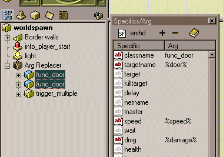
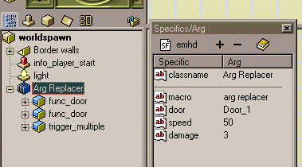
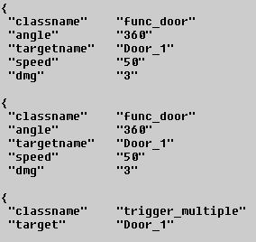
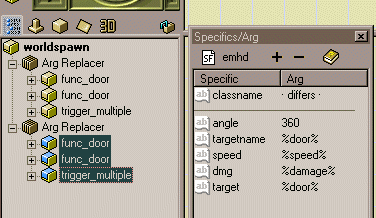
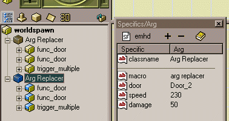
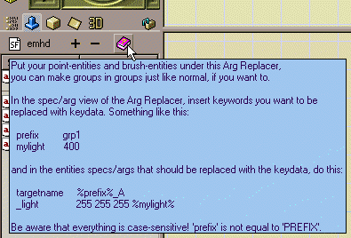

Arg Replacer
Updated 05 May 2001
- QuArK Information Base
- 2. Map editing
- 2.5. Plug-in descriptions
|
|
Arg Replacer
Updated 05 May 2001
|
Upper levels: - QuArK Information Base - 2. Map editing - 2.5. Plug-in descriptions |
|
2.5.4. Arg Replacer |
[ - - ] |
|
Index |
|
Usage |
Decker - 05 May 2001 | [ Top ] |
|
To explain the idea of the 'Arg Replacer', it is properly best to show an example. Say you have two func_doors and a trigger_multiple which should activate the two doors. Normally you would have to assign the same string to targetname of the two func_doors and in target of the trigger_multiple. If you then wanted a second copy of those three entities, you had to go in and change the string of all three specifics again, so the first trigger_multiple don't activate the second set of func_doors. With the 'Arg Replacer', you can put each copy of the three entities into an Arg Replacer object (as shown in the images), and then only in the Arg Replacer's specific/args change the string. When QuArK then builds the map, the special constructed value '%name%', will be replaced with the ones from the Arg Replacer object. In the image, both func_doors have set some of their specifics to values that the Arg Replacer should replace when the map is build:  The trigger_multiple also have a specific set, which match the targetname of the func_doors:
In the Arg Replacer, you add new specifics (not surrounded by % signs) that match the %name% args in the other entities. The argument is what they will be replaced with.  This is the result that QuArK will produce of the above three entities, that have their arguments replaced by the Arg Replacer:  Now you can take a second copy of the Arg Replacer, and its childs. But this time you don't have to change the arguments of the three entities:  Only the Arg Replacer's arguments have to be changed:  Remember! There is a blue hintbox, when viewing the Arg Replacer's spec/arg view.  |
|
Bugs |
Decker - 05 May 2001 | [ Top ] |
|
If you should experience any bugs, by using this Arg Replacer, please contact Decker. |
|
Copyright (c) 2009, GNU General Public License by The QuArK (Quake Army Knife) Community - http://quark.sourceforge.net/ |
[ - Top - ] |